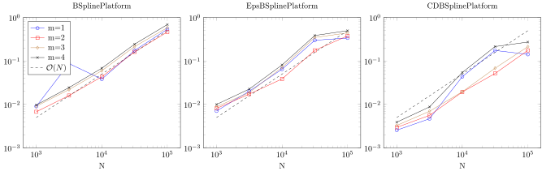

1D B-spline extension
The package provides a fast solver for a B-spline extensions such as, e.g.,
julia> P1 = ExtensionFramePlatform(BSplinePlatform(),0.0..0.5)
ExtensionFramePlatform(BSplinePlatform{Float64,3}(), 0.0..0.5)
julia> P2 = ExtensionFramePlatform(EpsBSplinePlatform(),0.0..0.5)
ExtensionFramePlatform(EpsBSplinePlatform{Float64,3}(), 0.0..0.5)
julia> P3 = ExtensionFramePlatform(CDBSplinePlatform(),0.0..0.5)
ExtensionFramePlatform(CDBSplinePlatform{Float64,3}(), 0.0..0.5)The AZ algorithm
The AZ algorithm (reference needed) provides for a fast approximation algorithm even though the system that needs to be solved is rectangular, and highly ill conditioned
The AZ algorithm consists of three steps for solving a system Ax=b
- Solve
(A-AZ'A)x1 = (I-AZ')b x2 = Z'(b-Ax1)x = x1 + x2
Z can be any matrix, but the algorithm is most efficient if A and Z' can be applied fast, and A-AZ'A is of low rank.
For the platforms above these operators are readily available using AZ_A and AZ_Zt:
julia> N = 200;
julia> AZ_A(P1,N)
Operator D * R[1:401 ‚Üí ùïÄ] * M
R : Restriction of coefficients to subset
M : Multiplication by BasisFunctions.VerticalBandedMatrix{Float64}
D : Diagonal operator with element type Float64
↳ [1.0, 1.0, 1.0 … 1.0, 1.0, 1.0]
julia> AZ_Zt(P1,N)
Operator M₂ * M₁ * E[ ùïÄ ‚Üí 1:401] * D
M₂ : Multiplication by Circulant{Float64,Complex{Float64}}
M₁ : Multiplication by BasisFunctions.HorizontalBandedMatrix{Float64}
E : Extending coefficients by zero padding
D : Diagonal operator with element type Float64
↳ [1.0, 1.0, 1.0 … 1.0, 1.0, 1.0]
julia> AZ_Zt(P2,N)
Operator M₂ * M₁ * E[ ùïÄ ‚Üí 1:401] * D
M₂ : Multiplication by BasisFunctions.HorizontalBandedMatrix{Float64}
M₁ : Multiplication by BasisFunctions.HorizontalBandedMatrix{Float64}
E : Extending coefficients by zero padding
D : Diagonal operator with element type Float64
↳ [1.0, 1.0, 1.0 … 1.0, 1.0, 1.0]
julia> AZ_Zt(P3,N)
Operator M * E[ ùïÄ ‚Üí 1:401] * D
M : Multiplication by BasisFunctions.HorizontalBandedMatrix{Float64}
E : Extending coefficients by zero padding
D : Diagonal operator with element type Float64
↳ [1.0, 1.0, 1.0 … 1.0, 1.0, 1.0]
Sparseness of A and Z'
The FrameFun package contains fast solvers for solving the low-rank system of the first AZ step. However, it does not use the (ϵ-)sparse (with sparse: a lot of zero elements) structure of A and Zt which is a consequence of the compact nature of a B-spline basis. For all platforms AZ_A returns the same operator. As is seen above A is a banded matrix, hence sparse. For P1 is Z' is the product of a banded matrix and a circulant matrix. The circulant matrix has exponentially decreasing elements in the first column, hence ϵ-sparse. Only for P2 and P3, Z' is actually be sparse.
BSplineExtensionSolver
The BSplineExtensionSolver of this package uses the compactness of the B-spline basis and by consequence the sparseness of A and Z'. First, the compactness of the B-spline basis introduces a lot of zero columns in A-AZ'A. Therefore, the BSplineExtensionSolver removes the zero columns. It knows of the location of the non zero columns by using nonzero_coefficients. Secondly, since also the dual dictionary is (ϵ-)compactness (see Basis platforms for examples of these dual dictionaries), A-AZ'A will contain some (ϵ-)zero rows. These are also removed by the BSplineExtensionSolver, where crop_tol is a parameter that indicates how large ϵ should be. The resulting system is of size truncated_size.
Below we illustrate how the truncated_size of a BSplineExtensionSolver changes for varying platform, B-spline order (m), crop_tol and degrees of freedom (N).
Column truncation
The column truncation of A-AZ'A depends on the order of the B-spline (and the domain) only. This is seen in the figure below, which shows truncated_size(S)[2] with S=BSplineExtensionSolver(A-A*Zt*A).
[.pdf], [generated .tex], [generated .tikz]
Row truncation
The row truncation of A-AZ'A depends on all of the parameters. This is seen in the figure below, which shows truncated_size(S)[1] with S=BSplineExtensionSolver(A-A*Zt*A;crop_tol=crop_tol) for crop_tol in (1e-16, 1e-10).
The truncated size reaches a limit for N growing large. This limit is much smaller using CDBSplinePlatform. The EpsBSplinePlatform is a bit more robust than the BSplinePlatform in generating a low truncated size since it enforces the dual dictionary to be compact, while the dual dictionaries of the latter are only ϵ-compact.
[.pdf], [generated .tex], [generated .tikz]
B-spline extension approximation
The BSplineExtensionSolver is just a means to an end. It is used in the first step of the AZ algorithm. In this section we use the solver to approximate the exponential function on the interval [0,0.5] using a B-spline basis of order m on the interval [0,1]. First we show the convergence results, then the time complexity of the approximation algorithm.
Errors
In the figure below, which shows the uniform error of approximating a 1 dimensional analytic function (details are in the introduction of this section), we see that convergence is algebraic ($\mathcal O(N^{-m})$). This is common behaviour for approximating with splines.
[.pdf], [generated .tex], [generated .tikz]
Timings
For all platforms, the most costly part is the evaluating operator-vector multiply $(A-AZ'A)x$ since solving the system is constant in N (it is $\mathcal O(d^3)$). For the first platform the operator-vector multiply time complexity is $\mathcal O(N\log N)$. For the last two the multiply time complexity is $\mathcal O(N)$. However, the construction complexity of Z' for the first two platforms is also $\mathcal O(N\log N)$.
The quasi-linear behaviour of the method is confirmed in the figure below that show the timings for approximating a 1 dimensional analytic function (details are in the introduction of this section).
[.pdf], [generated .tex], [generated .tikz]

B-spline extension Reference
BSplineExtension.nonzero_coefficients — Method.nonzero_coefficients(dict::Dictionary1d, x::Real)Return the coefficient indices (UnitRange) of the dict elements that evaluate non zero in x
BSplineExtension.BSplineExtensionSolver — Type.struct BSplineExtensionSolver{T} <: FrameFun.BasisFunctions.VectorizingSolverOperator{T}This solver is efficient and effective in the first step of the AZ algorithm of a compact dictionary only. For this dictionary the function nonzero_coefficients should be much smaller than the length of the dictionary.
See also: nonzero_coefficients
BSplineExtensionSolver(M::DictionaryOperator; directsolver=:qr, crop=false, crop_tol=0, verbose=false; options...)Arguments
M: The operator to be solved. Its source should be anExtensionFrame(with asupportand asuperdict) and its destination a GridBasis with collocation points in the source support. The indices of the nonzero columns ofMshould be equal to the indices of the source superdict elements that evaluate non-zero on the source support boundary. An example is AZ'A-A where A isAZ_Aand Z' isAZ_Ztof the platformExtensionFramePlatform(CDBSplinePlatform(), 0.0..0.5)
Keywords
directsolver::Symbol = :qr: The direct solver to use to solve the left-over truncated OperatorM. SeeFrameFun.crop::Bool = true: Truncate the nonzero rows too.crop_tol::Number = 0: Ifcropis true, truncate the rows with elements smaller thancrop_tol.verbose::Bool = false: Print method information. SeeFrameFun
Examples
The easiest use of BSplineExtensionSolver is providing it just with (AZ'A-A)
julia> P = ExtensionFramePlatform(CDBSplinePlatform(), 0.0..0.5); N = 30;
julia> plunge = plungeoperator(P,N); A = AZ_A(P,N); Zt = AZ_Zt(P,N);
julia> M = plunge*A;
julia> S = BSplineExtensionSolver(M;crop=true)
BSplineExtensionSolver
julia> b = samplingoperator(P,N)*exp;
julia> x1 = S*plunge*b;
julia> x2 = Zt*(b-A*x1);
julia> F = DictFun(dictionary(P,N), x1 + x2)
DictFun{Float64,Float64}(A 1-dimensional Expansion with 30 degrees of freedom.
Basis: Extension frame
)More often it will be used as a parameter for FrameFun functionality. The following does the same as the previous example:
julia> P = ExtensionFramePlatform(CDBSplinePlatform(), 0.0..0.5); N = 30;
julia> Fun(exp, P, N; REG = BSplineExtensionSolver)
DictFun{Float64,Float64}(A 1-dimensional Expansion with 30 degrees of freedom.
Basis: Extension frame
)
BSplineExtension.truncated_size — Method.truncated_size(op::BSplineExtensionSolver)The size of the smaller system. The one that has to be solved with a direct solver.